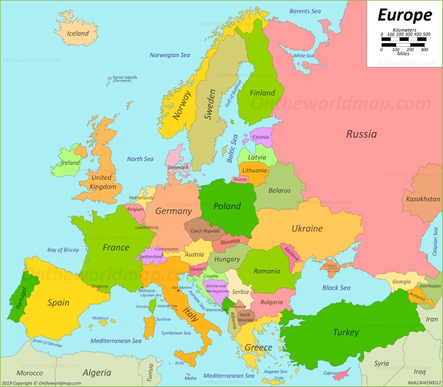
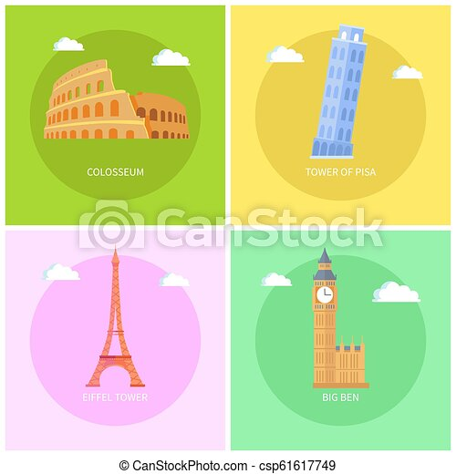

About the Europe(very short)
Europe is the western part of the continent of Eurasia, often thought of as its own continent. It is separated from Asia by the Ural Mountains in Russia and the Bosporus strait in Turkey.
Europe is bordered by water on three sides. Europe is known for some of the most famous like England, Germany, Italy, France, etc.

Area:- 4 million square miles(6th largest continent)
No. of countries:- 44
Population:- 740 million
For more information, Go to Europe wikipedia
Why you should visit Europe:
This continent have some of the most famous buildings like Big ban, Eiffel tower, Colosseum, the Parthenon, Hungaria parliament, etc.